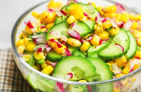

Ensalada Fresca
Ingredientes
- Lechuga
- Tomate
- Pepino
- Aguacate
- Aderezo de yogur

Ensalada fresca con ingredientes saludables y un aderezo ligero.
Ensalada fresca con ingredientes saludables y un aderezo ligero.
Smoothie refrescante y nutritivo, ideal para cualquier momento del día.
Sopa caliente y reconfortante, perfecta para los días fríos.
Tostada integral con aguacate, una opción saludable y deliciosa para el desayuno.